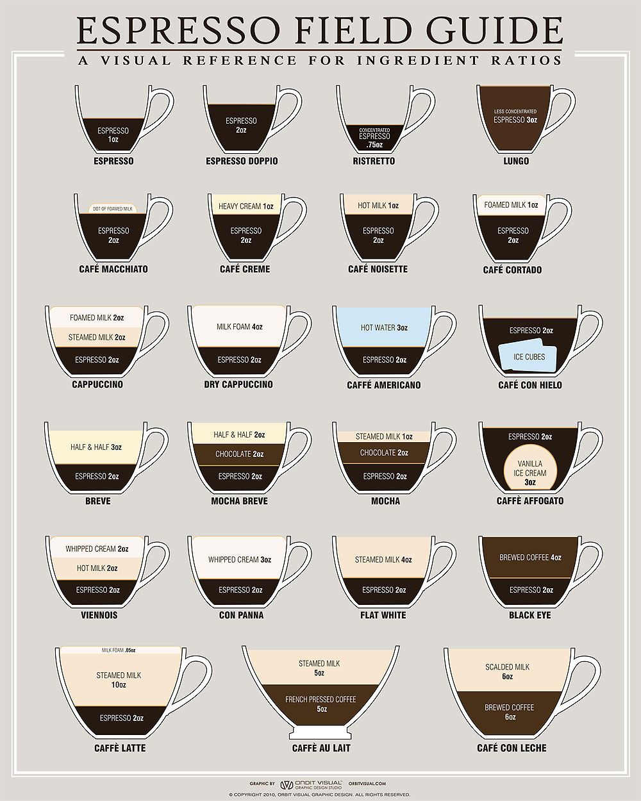

In A Coffee Shop
Buying a cup of coffee in your favourite coffee store can be confusing. Here is a quick guide to what all those terms mean.
Note: not all stores might sell every one of the following coffees.

In The Store - By Origin
This is for the pros, who really want to get into coffee. The origin of your coffee beans can be the difference between loving and hating a cup of coffee.
Often times, coffee beans are often blends from multiple origins to gain a more complex flavour. However, understanding the differences between single origin beans will give you a better understanding of coffee flavours
-
African and Arabian beans
These beans tends to provide the most intense, slightly acidic and complex flavour, and tend to have fruiter and wine-like notes like blackcurrant. They are best served as an espresso
-
Central and South American beans
These beans tend to provide a much more balanced, milder and sweet flavour, which often have notes of chocolate and tend to suit the addition of milk.
-
Asia-Pacific beans
These beans tend to provide a moderate intensity and acidity with a rich flavour but are earthier and have a "dry" aftertaste. They are best suited for black coffees, occasionally with milk.